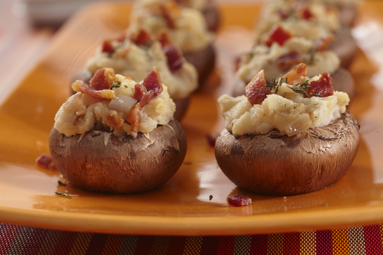

Stuffed Mushrooms

Description
A healthy and filling meal that will satisfy picky eaters. This recipe combines a blend of spices that compliments both the potato and mushroom to send your tastebuds on an adventure.
Ingredients
- 1 spring onion, diced
- Ruby potato, 750 grams
- 4 portabello mushrooms
- Olive oil, 2 tablespoons
- Butter, 1 tablespoon
- Soy milk, 1 tablespoon
- Smoked paprika, 1 tablespoon
- Cumin seeds, 1 teaspoon
- Salt and pepper, to taste
Steps
- Preheat oven to 180 degrees celcius
- Boil potatoes until soft and fluffy
- While potates are boiling, remove gills from mushrooms
- Lightly oil oven tray and place de-gilled mushrooms on tray ensuring adequate spacing
- Combine spices onto drained, boiled potatoes
- Mash the potatoes while adding butter and milk to obtain desired texture
- Stuff mushrooms with the mashed potato
- Place stuffed mushrooms into oven for 35 minutes, or until lightly browned
- Serve with sour cream, garnish with spring onion